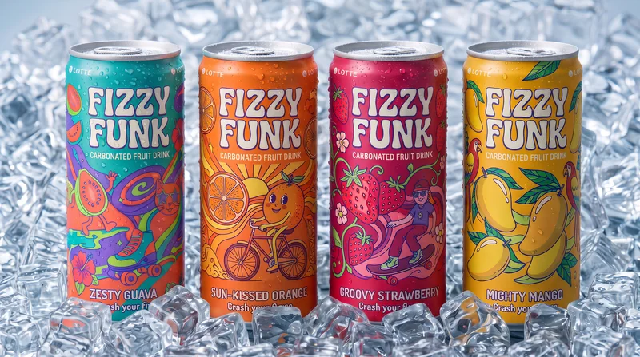
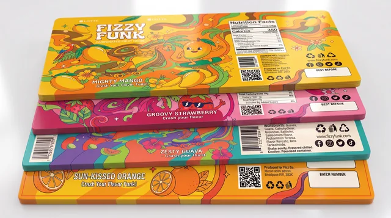
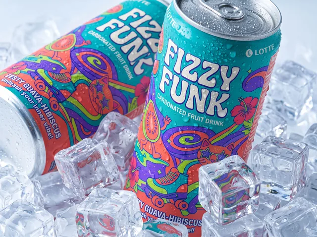
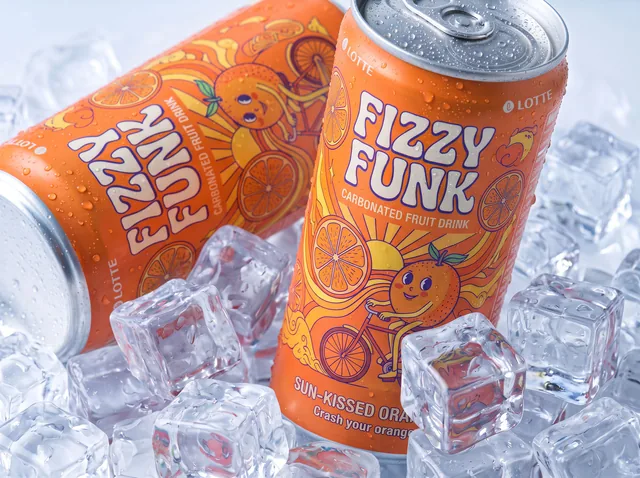
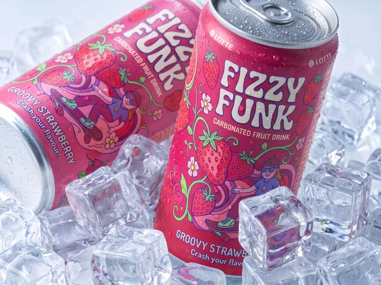
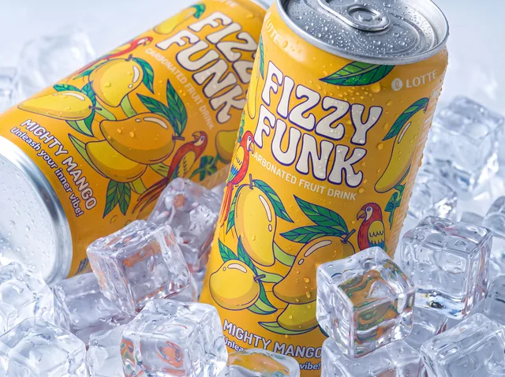

Naming and wordmark
The Fizzy Funk name and visual identity were created specifically for the concept.
Self-initiated concept · August 2026
One playful master brand. Four flavours designed to stand apart without falling apart.

01 / The brief
The concept was created for young adults and teenagers in a mid-premium beverage position. The aim was a bold retro-inspired identity with enough personality to feel distinctive on shelf, without sacrificing readability or range consistency.
The project was deliberately built as a complete brand exercise rather than a single attractive can. Naming, wordmark, illustration, packaging layouts, flavour differentiation, mockups and presentation were all developed together.
02 / Designed end to end
The Fizzy Funk name and visual identity were created specifically for the concept.
Each fruit character and illustration was created as part of the shared visual language.
Guava, orange, strawberry and mango each use a distinct dominant colour and mascot.
Front, back and presentation label layouts were designed as one coherent family.
Hero product views and lifestyle renders extend the packaging beyond flat artwork.
The final assets were organised to demonstrate the system clearly across the range.
03 / Design logic
Logo placement, layout rhythm and illustration style stay consistent so the range reads as one brand.
Dominant colour, mascot and fruit treatment give each can its own shelf identity.
Retro soda packaging, Japanese packaging, psychedelic illustration and modern craft beverage branding informed the direction.
The final route was selected because it offered the strongest balance of those three criteria.
04 / How the direction was chosen
Multiple layouts, colour palettes, mascot concepts and typography treatments were explored before the final route was selected.
The direction had to remain coherent across four flavours while allowing each can to feel distinct enough to recognise quickly.
Iterations focused on consistency, visual hierarchy and print-minded presentation rather than adding decoration for its own sake.
05 / Final system





06 / Outcome
Packaging and brand systems